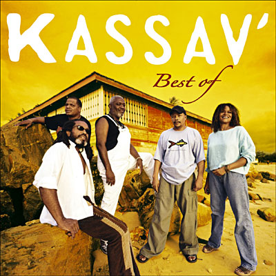
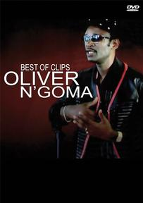

Kassav: Los padres del Zouk
Kassav' es una banda francófona de zouk, formada en 1979 París por Pierre-Edouard Décimus y Jacob F. Desvarieux.


Oliver Ngoma
Oliver N'Goma (23 March 1959 – 7 June 2010) was a Gabonese Afro-zouk and reggae singer and guitarist. Nicknamed "Noli, " he was born in Mayumba in south-west Gabon in 1959. He is best known for his 1989 song Bane, which was popularized by Radio Africa N.1 and Gilles Obringer.